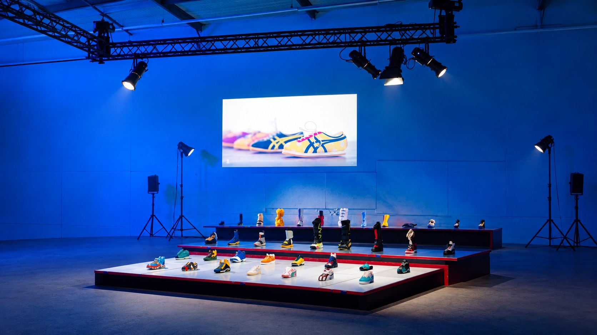
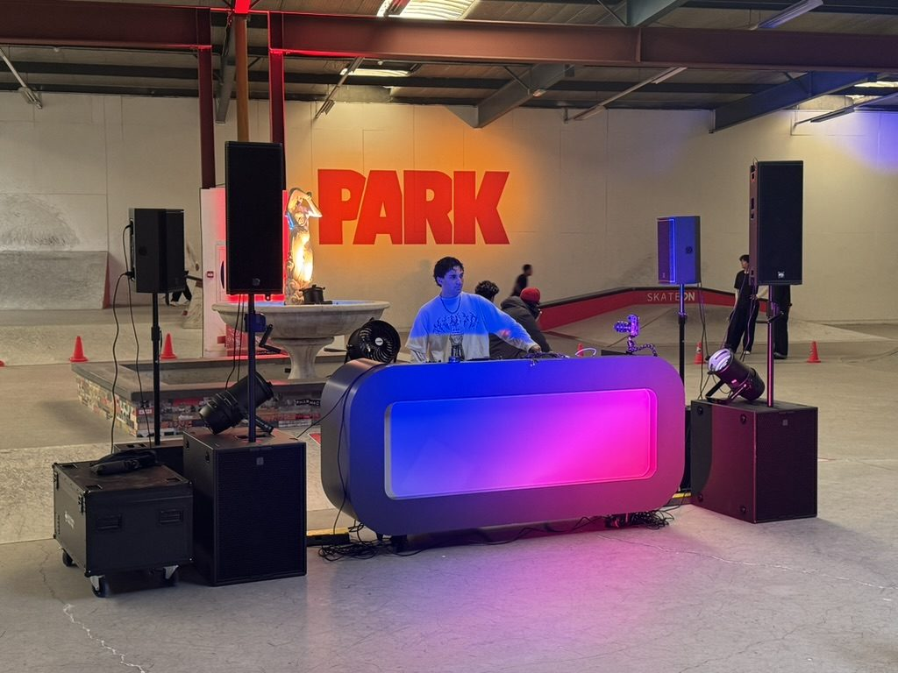
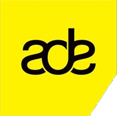
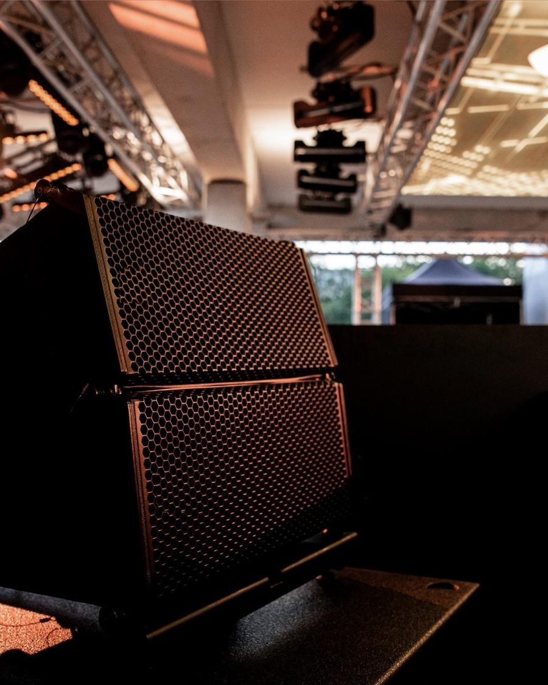

Brand activation
Lancering nieuwe sneakercollectie, daarna een feest →
Brand activationmodemerkproductlicht en lichtshow

Brand activation
Brand activationmodemerkproductlicht en lichtshow


Dance event
Franse DJ Rivo & friendsnauwelijks soundchecklocatie ombouw

Zakelijk event
5 jaar CreativeGroundsdj en saxofonistgericht geluid

Advies
Een systeem dat meegroeitinkoop tegen scherpe prijs